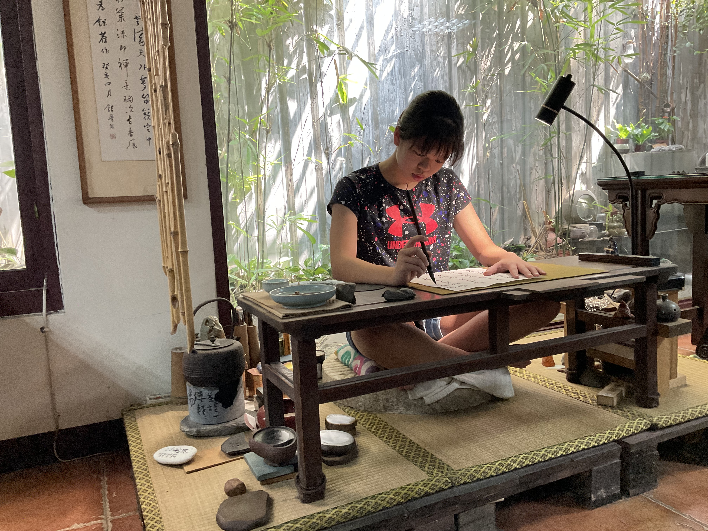
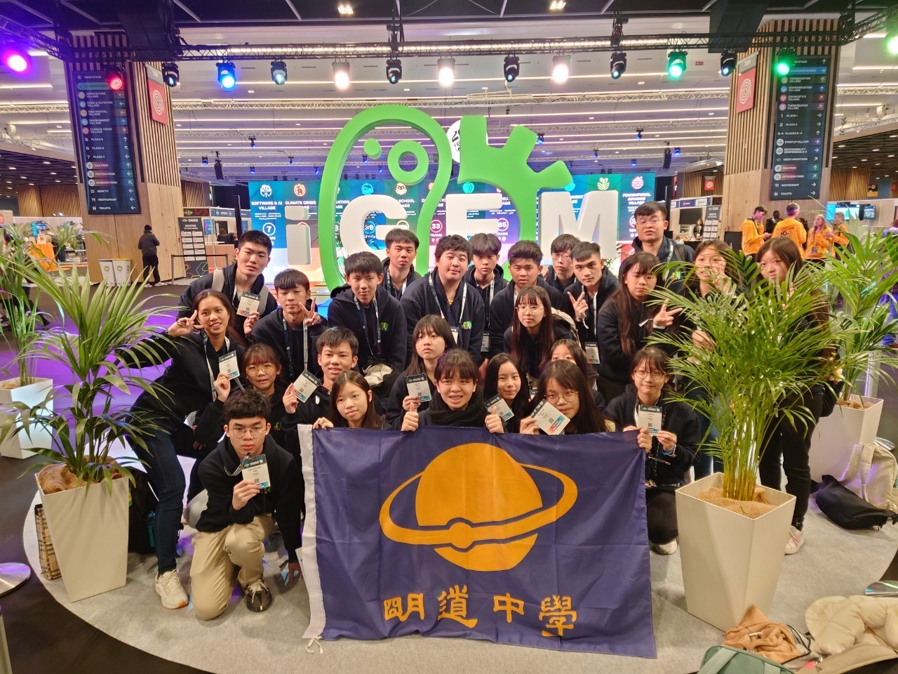
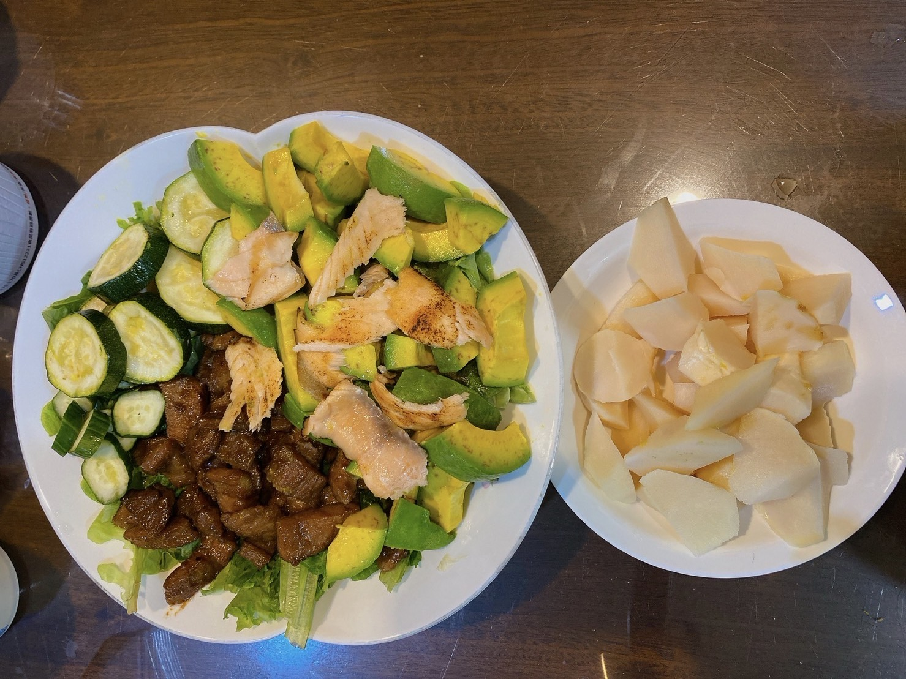

What is a CAS experience?
A CAS (Creativity, Activity, Service) experience in the International Baccalaureate Programme is a holistic learning component.
It encourages students to engage in diverse, challenging activities beyond academics.
Whether through artistic pursuits, sports, or community service, CAS fosters personal growth, intercultural understanding, and a commitment to making a positive impact.
Chinese Calligraphy
Project Learning Outcomes:
- Become more aware of their own strengths and areas for growth
- Persevere in action
- Undertake challenges that develop new skills
Chinese calligraphy is a mesmerizing art form that blends aesthetic beauty with cultural significance.
The rhythmic dance of the brush on paper transforms characters into visual poetry.
Each stroke is a deliberate expression, embodying centuries of tradition.
The dynamic interplay of ink and paper creates a captivating and deeply enriching experience.
Teacher's Words
|
Photo with my Teacher
|

Practicing
|
My Work
|
Equestrian Training
Project Learning Outcomes:
- Become more aware of their own strengths and areas for growth
- Persevere in action
- Undertake challenges that develop new skills
Engaging in equestrian activities is a captivating experience, forging a unique bond between rider and horse.
The rhythmic cadence of hooves and the tactile communication create a harmonious partnership.
Beyond the thrill of riding, it instills discipline, patience, and a profound appreciation for the majestic connection between human and equine.
Outdoor Training
|
Outdoor Training
|
Vlogging
|
Indoor Training
|
IGEM Synthetic Biology Competition
Project Learning Outcomes:
- Become more aware of their own strengths and areas for growth
- Undertake challenges that develop new skills
- Working collaboratively with others
- Develop international-mindedness through global engagement, multilingualism and intercultural understanding
iGEM, the International Genetically Engineered Machine competition, is a premier worldwide synthetic biology event.
Teams of students design and construct novel biological systems, showcasing their projects at a global competition.
iGEM fosters innovation, interdisciplinary collaboration, and the responsible use of genetic engineering to address diverse challenges in healthcare, environment, and industry.

Group Photo
|
Group Exchange
|
Photo with other Teams
|
Photo with other Teams
|
Cooking for My Family
Project Learning Outcomes:
- Persevere in action
- Undertake challenges that develop new skills
Whipping up delightful meals for my family is a daily joy,
blending fresh ingredients with love to create a symphony of flavors that nourish both body and soul,
fostering cherished moments and strengthening the bonds that make our home a haven of warmth and happiness.
Family Meal 1
|
Family Meal 2
|
Family Meal 3
|

Salad
|
Website Building
Project Learning Outcomes:
- Working collaboratively with others
- Undertake challenges that develop new skills
Website building involves creating digital platforms using coding languages like HTML, CSS, and JavaScript.
Designing layouts, integrating functionality, and optimizing for user experience are crucial.
CSS Designing
|
Adding Images
|
Progess
|
Adding Texts
|